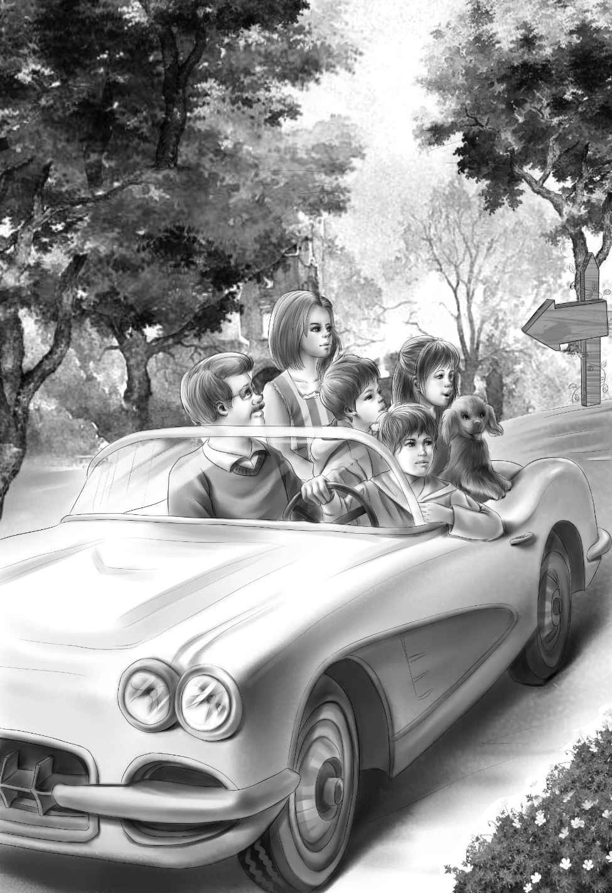

The visit to Aunt Jane came to an end.Now,after so many years,Aunt Jane was married to Andy Bean.Nobody called her Mrs.Bean.This pleased her very much.Everyone called her Mrs.Andy,and that pleased Andy.
Grandfather Alden called his four grandchildren to him and said,"I think we should go home now.Aunt Jane and Andy want to go away on a wedding trip."
"I wonder where?" said Benny."I bet they are going around the world.Andy told Aunt Jane that she would never have a dull moment."
Henry laughed."I can believe that," he said."Andy is never still."
Violet said,"Aunt Jane looks so young and well,doesn't she,Jessie?"
"Yes," agreed Jessie."Ever since Uncle Andy came home she has been very happy.I agree with you,Grandfather.I think we ought to go.We don't want to stay on the farm without Aunt Jane."
So they packed their bags to go home.Aunt Jane helped Jessie make a picnic lunch.
All the good-bys were said and Henry started the car."Here we go!" Benny cried.
And so they started for home—at least that was what they planned.
Henry said,"Let's have a change and go home by the beach road."
Henry drove the station wagon down the beach road.They could see the ocean most of the way.After about an hour Benny said,"I'm hungry."
"You are always hungry,"said his grandfather."Wait till we come to the lighthouse in Conley.There is a little store there.We could buy some milk.We have enough sandwiches to last two meals—ham and chicken.Aunt Jane makes delicious sandwiches."
"Let's go out and see the lighthouse," said Benny."Maybe the lighthouse keeper would show us the little porch on the top floor."
"Maybe he would,old fellow," said Henry,laughing."That is called a lookout,not a porch.But it is a long climb to the top of a lighthouse."
Soon they saw the lighthouse in the distance.It was white.There was a little white house near the foot of the lighthouse with a little path between.The two buildings stood on a rocky point of land,almost in the water.

"Look!" cried Violet."There's a sign on it.What does it say?"
"I can't see yet," said Mr.Alden.
"I can," said Henry."It says FOR SALE."
"A lighthouse for sale!" said Jessie."I didn't know anyone ever sold lighthouses.I thought they belonged to the government."
"To the Coast Guard," said Mr.Alden."But I have heard that many lighthouses are being sold.Radar is used to keep ships safe now."
"Oh,what a wonderful house that would be to live in,Grandfather!" said Benny."See,there is a window on each floor.You could sleep on the first floor,and then you wouldn't have to do any climbing.The girls could have the next floor,and Henry the next,and I could have the top floor with that little porch—I mean lookout.That would be neat!"
Mr.Alden laughed.He said,"Are you saying you want to buy the lighthouse?"
"Oh,absolutely!" said Benny.
"Really," said Jessie,"we could have a lovely time in a lighthouse,Grandfather.We could go swimming any time right in our own yard."
"And we could pick up shells and study the water birds," said Violet quietly.
"We could certainly go fishing," added Henry.
They had come to the lighthouse by this time.Henry stopped the car,and they all looked at the place.Nobody said a word.They were all waiting for Grandfather to make up his mind.
At last he said,"Come on,children,we'll go into the little store and ask some questions.Maybe we could use a lighthouse."
"Hurray!" shouted Benny.
Everyone else was as pleased as Benny.They smiled and looked at each other.
"Drive right up to the door," said Mr.Alden."A store man always knows everything."
It was true.When Mr.Alden said,"What do you know about that lighthouse?"the man laughed and said,"I know everything about that lighthouse.It's not used any more."
"I see it's for sale," said Mr.Alden.
"Well,it isn't for sale now," said the man,"because I bought it myself.I haven't had time to take down the sign.I'd like to rent it,though."
"Would you?" asked Mr.Alden."My grandchildren think they would like to spend a few weeks there."
"Well,I'd be glad to rent it to you.It's all fixed up for light housekeeping."
Benny laughed."Light housekeeping in a lighthouse," he said."That's a good joke."
"Does the little white house go with it?" asked Henry.
"Well,no," said the storekeeper."It ought to.But I wasn't quick enough to buy the house.A man named Cook bought that.He buys houses and sells them.He is going to fix it up to rent someday.But now the windows are broken,as maybe you saw,and they are all boarded up.He never thought anyone would rent the lighthouse."
"Won't we need the little house?" asked Jessie.
"No.That was the summer kitchen.The winter kitchen in the lighthouse is all right.It really has a better gas stove and refrigerator.There's a good cot bed on every floor.You could get all your food right here in my store.My name is Hall."
"I thought so,Mr.Hall,when I saw the sign HALL'S GROCERY," said Mr.Alden.
Henry asked,"Could we ever build a fire on the beach for a cook-out?"
"Yes,you could.There's nothing on that point but sand and water and rocks.No bushes.You will be careful,I know."
Benny said,"Yes,we bury our fires with sand."
"Good! Make yourselves at home.Do anything you want.Here's the key if you want to go in and look around."
"Well,I do," said Benny."I want to see the top floor with the porch railing."
"Fine," said Grandfather."You get in the car.I'll settle the rent with Mr.Hall."
Henry took the key and drove down to the lighthouse.They could not drive to the door because the road was too sandy.
When Henry unlocked the door,the girls went into the kitchen at once.
"Good!" said Jessie,"this is a fine little gas stove."
Violet said,"The dishes are all different,but we like them different."
Benny climbed the winding stairs.Round and round he went.
He called,"These rooms are very small.Nothing but a cot bed in each one." He stopped to look out of each window.He called out,"First floor.This is Grandfather's room."
He climbed higher."Second floor,Jessie and Violet.Third floor,Henry.And here's mine!" They could hardly hear him.
Then they heard no more at all from Benny.He was out on his top floor looking out to sea.
Grandfather said,"It's lucky there's a window on every floor.It will be hot in here."
"Maybe not too hot," said Violet."We are right by the sea breezes."
By the time the beds were made,everyone was tired.
"Let's go to bed," said Mr.Alden.
"Go to bed at eight o'clock?"cried Benny."But I guess my bed will feel rather nice after all."
Everyone was soon asleep.No one heard the town clock strike.But it did strike—nine,ten,eleven.As it struck twelve,Watch sat up and began to bark.